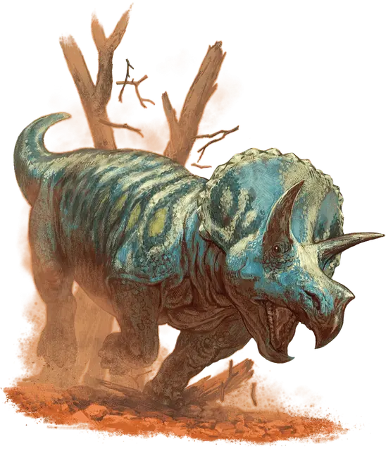

Трицератопс
Triceratops
Огромный Зверь, без мировоззрения

Класс Доспеха 13 (природный доспех)
Хиты 95 (10к12 + 30)
Скорость 50 футов
| мод | спас | ||
|---|---|---|---|
| СИЛ | 22 | +6 | +6 |
| ЛОВ | 9 | −1 | −1 |
| ТЕЛ | 17 | +3 | +3 |
| мод | спас | ||
|---|---|---|---|
| ИНТ | 2 | −4 | −4 |
| МДР | 11 | +0 | +0 |
| ХАР | 5 | −3 | −3 |
Чувства пассивное Восприятие 10
Опасность 5 (1800 опыта)
Бонус мастерства +3
Среда обитания Луг
Особенности
Растаптывающий рывок. Если трицератопс переместится как минимум на 20 футов по прямой к существу, а затем в том же ходу попадёт по нему атакой бодания, эта цель должна преуспеть в спасброске Силы Сл 13, иначе будет сбита с ног. Если цель сбита с ног, трицератопс может бонусным действием совершить по ней одну атаку растаптыванием.
Действия
Бодание. Рукопашная атака оружием: +9 к попаданию, досягаемость 5 футов, одна цель. Попадание: Колющий урон 24 (4к8 + 6).
Растаптывание. Рукопашная атака оружием: +9 к попаданию, досягаемость 5 футов, одно лежащее ничком существо. Попадание: Дробящий урон 22 (3к10 + 6).
Описание
Один из самых агрессивных травоядных динозавров. Череп трицератопса имеет костяной воротник, служащий для защиты. С внушительными рогами и впечатляющей скоростью трицератопс может без проблем нанизать хищника на рога или растоптать.
См. дополнительно статью: "Бестиарий: Динозавры"